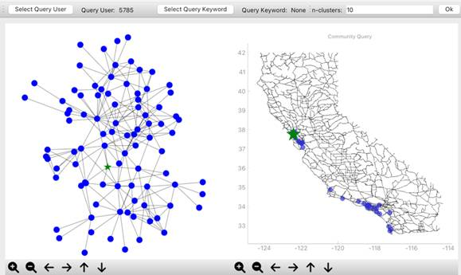

Hello, my name's Halie Eckert! I'm a senior at Kent State University with a deep passion for programming.
I have experience with Python, Java, basic web development, and database systems. I'm currently employed as a
student employee, as well as a co-op student at Sherwin-Williams. After I graduate, I plan on furthering my
career at Sherwin-Williams.
Experience And Projects
Sherwin-Williams Intern/Co-Op
At Sherwin-Williams, I've had the oppurtunity to be involved in multiple projects, such as the ProDash Upgrade.
On this project, I played a part in updating Sherwin-Williams web dashboard for their Pro-users, such as painters and
contractors. I also manage, document, and maintain, CPRA banners on all PSG Sherwin domains.
Spatial-Social Networks Research
Location-based social networks have grown in size and popularity in the past two decades due to their
real-world versatility. In such networks, it is important to create a spatial-social network that
not only looks into personal relationships among users but also their geographical closeness on road
networks. This research focuses on creating a system to analyze and query such networks.

KSU Ticketing System Data Transfer
This project aimed at creating a data export of open service tickets, reformat the export, and import
the data to a new ticketing system. A python script was created to work with the ticketing system
API and build the import file.
Hobbies
In my free time, I enjoy fish and reptile keeping and (unsurprisingly) programming. I currently have
13 aquariums, a gecko, and two cats in my small apartment. I also foster cats with the Portage
APL and have asisted with rehabilitating and finding over 20 cats their forever homes.